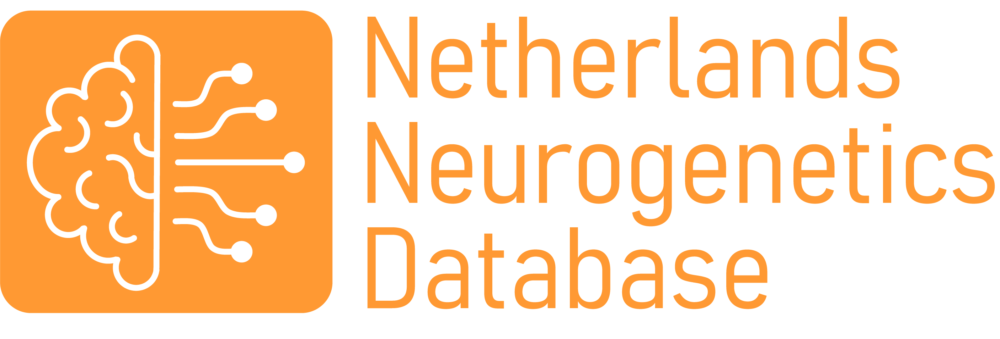

Latest News
New paper on genetic subtypes of multiple sclerosis
We are excited to share a new publication in collaboration with Karim Kreft from the University of Nottingham on the genetics of Multiple Sclerosis. In a large MS patient cohort, three distinct genetic subtypes of MS were identified. We show that these genetic clusters are also preserved in the Netherlands Brain Bank MS cohort, providing a unique opportunity to link genetic subtypes to detailed neuropathological and clinical data. These results provide new insights into the heterogeneity of MS and the symptoms associated with different genetic subtypes.
Read more
New NND website online!
The Netherlands Neurogenomics Database (NND) has launched a new website. It’s faster, easier to use, and lets you directly query datasets and browse ontologies. The platform now runs on APIs, making data access more efficient. Check it out now.
Read more